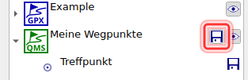
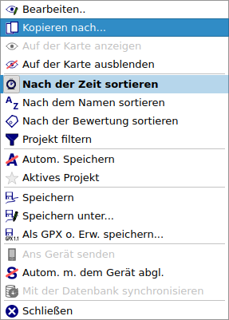
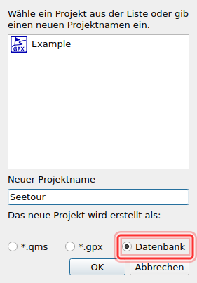
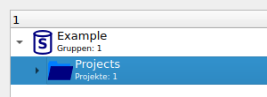
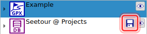
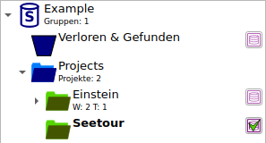

Ihre Arbeit speichern#
Diese Seite zeigt, wie Sie Ihre Projekte speichern: als Datei oder in einer Datenbank.
Ungespeicherte Änderungen erkennen#
Beim nächsten Start stellt QMapShack alle Projekte im Bereich Arbeitsplatz wieder her. Dafür speichert es eine eigene Kopie jedes Projekts. Die Datei, aus der ein Projekt geladen wurde, ändert sich erst, wenn Sie das Projekt speichern. Ein Projekt, das Sie angelegt haben, hat keine Datei, bis Sie es speichern.

Suchen Sie im Bereich Arbeitsplatz das Projekt mit ungespeicherten Änderungen: Es zeigt einen Speichern-Knopf in seiner Zeile, im Bild markiert. Hier hat Meine Wegpunkte einen neuen Wegpunkt, und Example hat keine Änderungen.
Klicken Sie auf den Speichern-Knopf. Wurde das Projekt noch nie gespeichert, fragt QMapShack zuerst nach dem Speicherort; siehe In eine Datei speichern. Nach dem Speichern verschwindet der Knopf.
In der Zeile eines Elements ist dasselbe Symbol kein Knopf, sondern eine Änderungsanzeige. Sie zeigt, dass sich das Element seit dem letzten Speichern des Projekts geändert hat.
In eine Datei speichern#
Klicken Sie im Bereich Arbeitsplatz mit der rechten Maustaste auf das Projekt und dann auf Speichern unter….
Wählen Sie im Dialog den Dateityp aus, geben Sie einen Dateinamen ein und klicken Sie auf Speichern.
Hat das Projekt schon eine Datei, klicken Sie im selben Menü auf Speichern. QMapShack überschreibt die Datei ohne Nachfrage.
Die Dateitypen:
QMapShack Binary (*.qms) ist das eigene Format von QMapShack. Es enthält alles, was QMapShack zu einem Projekt speichert, auch die Liste der Änderungen. Damit können Sie Änderungen rückgängig machen. Nutzen Sie es für Ihre eigenen Projekte.
GPS Exchange Format (*.gpx *.GPX) können auch andere Programme und Geräte lesen. Die Liste der Änderungen bleibt erhalten, nach dem erneuten Laden können Sie die Änderungen aber nicht mehr rückgängig machen.
Als GPX o. Erw. speichern… im Menü des Projekts schreibt eine reine GPX-1.1-Datei ohne die eigenen Daten von QMapShack. Sie ist für Programme gedacht, die die Erweiterungen von QMapShack nicht lesen können.
Speichern Sie ein Projekt in einem anderen Dateityp, schreibt QMapShack eine Kopie. Das Projekt behält seine eigene Datei und seinen Speichern-Knopf.
Datei → Alle GIS Daten speichern (Strg+S) speichert jedes Projekt im Arbeitsplatz. Bei einem Projekt, das noch nie gespeichert wurde, fragt QMapShack nach dem Speicherort.
Schließen Sie ein Projekt mit ungespeicherten Änderungen, fragt QMapShack, ob Sie es vorher speichern möchten.
In eine Datenbank speichern#
Ein Projekt aus einer Datenbank speichern Sie mit seinem Speichern-Knopf in seinen Ordner zurück. Mehr dazu unter Mit dem Arbeitsplatz arbeiten. Eine Datei legen Sie auf zwei Wegen als Projekt in einer Datenbank ab. Kopieren Sie Ihr Projekt im Arbeitsplatz, wie unten gezeigt, oder importieren Sie die Datei; siehe Dateien importieren.

Klicken Sie im Bereich Arbeitsplatz mit der rechten Maustaste auf das Projekt und dann auf Kopieren nach….

Geben Sie im Dialog Ein Projekt auswählen… einen Namen für das neue Projekt ein, hier
Seetour. Wählen Sie Datenbank aus und klicken Sie auf OK.
Klicken Sie im Dialog Übergeordneten Ordner auswählen… auf den Pfeil links neben der Datenbank, um sie aufzuklappen. Wählen Sie den Ordner aus, unter dem das Projekt liegen soll, hier die Gruppe Projects, und klicken Sie auf OK.
Lassen Sie im Dialog Datenbankordner… Projekt ausgewählt und klicken Sie auf OK.

Die Kopie erscheint im Bereich Arbeitsplatz als Seetour @ Projects und zeigt einen Speichern-Knopf.

Im Bereich Datenbank erscheint der Ordner Seetour ebenfalls. Er ist noch leer.
Klicken Sie im Bereich Arbeitsplatz auf den Speichern-Knopf von Seetour @ Projects. QMapShack schreibt die Elemente in den Ordner.
Den Dialog Ein Projekt auswählen… aus Schritt 2 sehen Sie auch bei Arbeitsplatz → Leeres Projekt hinzufügen und wenn Sie ein neues Element in ein neues Projekt legen. Wählen Sie dort Datenbank aus, legt QMapShack auch dieses Projekt in einer Datenbank an.